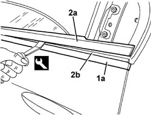

7010D26 REAR SIDE DESCENDING WINDOW GLASS SCRAPER (OUTER) (ONE), LEFT OR RIGHT - R.R
- Path
- Procedures > 70 FITTINGS > 7010 PASSENGER COMPARTMENT REAR SIDE DOORS > 7010D REAR SIDE DOOR WINDOW GLASSES > 7010D26 REAR SIDE DESCENDING WINDOW GLASS SCRAPER (OUTER) (ONE), LEFT OR RIGHT - R.R
- Kind
- repair procedure (removal / refitting; the operation number is the code)
- Applies to
- all engines; all production periods
- Interactive page
- https://sloeber94.github.io/elrnDB/alfa/159/en/#/939011179
Applies to: all engines; all production periods
 Removing
Removing
 Refitting
RefittingOp. 7010E62 REAR DOOR INNER REAR PANEL (ONE) LH OR RH - R R
Op. 7010E60 REAR DOOR PANEL - R R
1. Apply a strip of adhesive body tape to protect the paintwork.
2. Lift up the outer glass scraper (2a) and remove it, releasing it from the housing (2b). Work from the outside of the door using the special tool.
Tool | Description | Function | Validity |
|---|---|---|---|
1823014000 | Knife | Retainer removal |

Applies to: all engines; all production periods
Refitting
Removing- Check that the new glass scraper is not damaged.
- Remove the strip of adhesive tape.
- Fit the glass scraper in positon, carefully and gradually in order not to distort it.
Topics linked from this page (2)
Topics that link to this page (6)
- T002 WIND NOISE FROM THE REAR DOORS
- V006 REAR DOOR WATER PENETRATION
- 7010OA REAR DOORS NOISE LOCALISATION
- 7010D33 CHANNEL FOR DOOR DESCENDING GLASS INNER GUIDE (ONE) LEFT OR RIGHT FOR REAR SIDE DOOR - R.R.
- 7010E50 REAR SIDE DOOR PILLAR TRIM (ONE) LEFT OR RIGHT - R.R.
- 7205E38 STRIPPING REAR SIDE DOOR